철도신호기사 (2005-09-04 기출문제)
1과목: 전자공학
1. 광전음극의 한계파장이 4500Å 일 때, 이 광전음극의 일함수는 약 몇 eV 인가?
- 1.96
- 2.25
- 2.76
- 3.15
(정답률: 알수없음)

2. 발진기가 어떤 상태일 때 출력이 나타나는가를 바르게 설명한 것은?
- 입력 신호가 너무 크면 나타난다.
- 입력신호가 너무 작으면 나타난다.
- 출력신호가 입력에 가해지면 나타난다.
- 크리스탈이 있어야 만 나타난다.
(정답률: 알수없음)
3. 고속 스위칭 소자에 요구 되는 성질로 옳은 것은?
- 하강시간이 길 것
- 상승시간이 짧을 것
- 축적시간이 길 것
- 응답속도가 느릴 것
(정답률: 알수없음)
4. 그림의 윈 브릿지 발진회로에서 발진 주파수 f는 얼마인가?
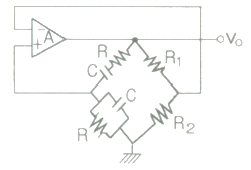
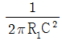
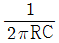
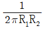
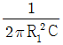
(정답률: 알수없음)
5. 증폭기의 대역폭을 결정하는 것은?
- 중역이득
- 임계주파수
- roll-off 율
- 입력커패시터
(정답률: 알수없음)
6. 차동증폭기의 차동이득이 2000, 동상이득이 0.2일 때 동상제거비는 몇 dB인가?
- 60
- 70
- 80
- 90
(정답률: 알수없음)
7. 전압직렬 부궤한 증폭기의 특성으로 틀린 것은?
- 위상일그러짐이 감소한다.
- 출력임피던스가 증가한다.
- 잡음이 감소한다.
- 안정도가 향상된다.
(정답률: 알수없음)
8. 3변수 X, Y, Z에대한 전가산기에 대한 설명으로 틀린 것은?
- 세변수의 합의 논리는 S=X⊕Y⊕Z 이다
- 세변수에 대한 캐리비트의 논리는 C=XY이다.
- 두 개의 입력과 한 개의 캐리 비트를 이용한 가산기이다.
- 이진수의 합을 계산하는데 사용된다.
(정답률: 알수없음)
9. 그림과 같은 발진기의 발진 조건은?
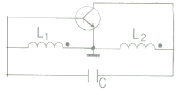
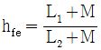
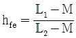
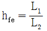
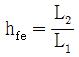
(정답률: 알수없음)
10. DSB에 대한 SSB 의 장점으로 잘못된 것은?
- 점유주파수 대역폭이 반으로 된다.
- 작은 송신 전력으로 양질의 통신이 가능하다.
- 송신기의 소비 전력이적다.
- 동기성 페이딩의 영향이 적다.
(정답률: 알수없음)
11. 이미터 변조 회로의 설명 중 틀린 것은?
- 신호파를 이미터에 가하여 진폭 변조한다.
- 직선성이 좋다.
- 매우 큰 전력이 필요하다.
- 컬렉터 변조와 비슷하다.
(정답률: 알수없음)
12. 12V 제너 다이오드의 경우에 제너 전류 10mA변화가 0.1V의 제너 전압을 만든다. 이 전류의 범위에서 제너 저항은 몇 인가?
- 0.1
- 1
- 10
- 100
(정답률: 알수없음)
13. 정논리에서 그림과 같은 케이트는?
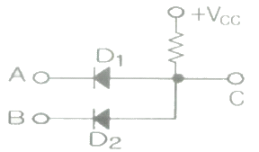
- NOR 게이트
- OR 게이트
- EXOR 게이트
- AND 게이트
(정답률: 알수없음)
14. 그림과 같은 연산회로는 어떤 회로인가?
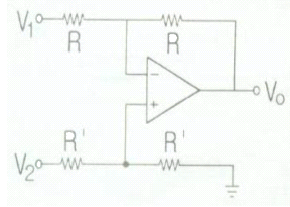
- 부호변환회로
- 가산회로
- 감산회로
- 미분회로
(정답률: 알수없음)
15. 이미터 플로워 회로의 동작에 대한 설명이다. 옳지 않은 것은?
- 입력 임피던스는 높고, 출력임피던스는 낮다.
- 전압이득은 1에 가깝다.
- 출력 위상이 입력 위상과 반대이다.
- 전력 증폭기에 적합하다.
(정답률: 알수없음)
16. 이상적인 OP Amp(연산증폭기)가 갖추어야 할 조건이 아닌 것은?
- 입력 오프셋(off set) 전압이 1이어야 한다.
- 입력 임피던스가 (R1=∞)이어야 한다.
- 대역폭이 무한대(BW=∞)이어야 한다.
- 전압이득이 무한대(AV=∞)이어야 한다. [정답] 가
(정답률: 알수없음)
17. 진폭 변조에서 반송파의 진폭이 Vc[V] 이고 변호파의 진폭이 Vm[V]인 신호파로 변조하면 변조도 m 은?
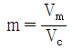
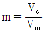
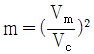
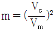
(정답률: 알수없음)
18. 정전압 회로의 구성 소자중 주요 동작 소자에 해당되는 것은?
- 리액터와 콘덴서
- 브라운관
- 인덕턴스와 콘덴서
- 트랜지스터
(정답률: 알수없음)
19. RS 플립플롭을 D 플립플롭의 형태로 바꾸기 위해 필요한 소자는?
- AND GATE 2개
- Inverter
- OR GATE 2개
- NAND GATE 2개
(정답률: 알수없음)
20. 터널 다이오드는 일반 적으로어떤 작용을 위하여 사용하는가?
- 제어 작용
- 정류작용
- 주파수 변환 작용
- 스위칭 작용
(정답률: 알수없음)
2과목: 회로이론 및 제어공학
21. 다음 회로의 A, B 단자에서 V-I 특성을 옳게 나타낸 것은?
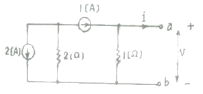
- v = i + 1
- v = i - 1
- v = i + 2
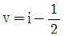
(정답률: 알수없음)
22.
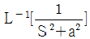
은 어느 것인가?- sin at
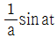
- cos at
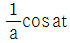
(정답률: 알수없음)
23. R-L 직렬회로에서 그 양단에 직류전압 E를 연결한 후 스위치 S를 개방하면
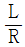
[s] 후의 전우 값 [A]은?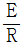
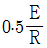
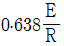
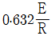
(정답률: 알수없음)
24. △-결선된 3상 회로에서 상전류가 다음과 같다. 선전류 I1, I2, I3 중 세어 그 크기가 가장 큰 것은 몇 [A] 인가?
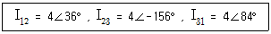
- 2.31
- 4.0
- 6.93
- 8.0
(정답률: 알수없음)
25. 다음 4단자 회로의 영상 임피던스 Z02는 몇 [Ω] 인가?
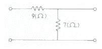
- 12
- 14
- 21/4
- 5/3
(정답률: 알수없음)
26. a, c 양단에 100[V] 전압을 인가시 전류 I 가 1[A] 흘렸다면 Rdml 저항은 몇 [Ω] 인가?
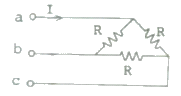
- 50
- 100
- 150
- 200
(정답률: 알수없음)
27. 60[Hz]에서 3[Ω]의 리액턴스를 갖는 자기인덕턴스 L값 및 정전용량 C값을 구하시오
- 약 6[mH], 600[uF]
- 약 7[mH], 770[uF]
- 약 8[mH], 884[uF]
- 약 9[mH], 990[uF]
(정답률: 알수없음)
28. 회로의 전압비 전달함수 H(jω) = Vc(jω) / V(jω)는?
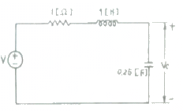
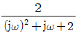
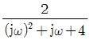
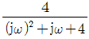
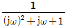
(정답률: 알수없음)
29. 분포정수선로에서 직렬 임티던스 Z[Ω], 병렬 어드미턴스 Y[℧]라 할때 선로의 전파 정수는?
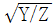
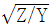
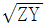
- YZ
(정답률: 알수없음)
30. 전류 i = 2 + 4√2 sinωt + 10√2 sin(3ωt +
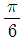
)일 때 실효값[A} 는?- √120
- √60
- √30
- √240
(정답률: 알수없음)
31. 1차 요소
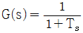
인 제어계의 절점 주파수에서의 이득[dB]은?- 약 -1[dB]
- 약 -2[dB]
- 약 -3[dB]
- 약 -4[dB]
(정답률: 알수없음)
32. 다음은 근궤적을 그리기 위한 규칙을 나열한 것이다. 잘못 된 것은?
- 근 궤적은 K=0 일 때 극에서 출발하고 K=∞ 일 때 영점에 도착한다.
- 실수축 위의 극과 영점을 더한 수가 홀수개가 되는 극 또는 영점에서 왼쪽의 실수축 위에 근 궤적이 존재한다.
- 극의 수가 영점보다 많을 경우 K가 무한에 접근하면 근 궤적은 점근선을 따라 무한 원점으로 간다.
- 근 궤적은 허수축에 대칭이다.
(정답률: 알수없음)
33. 2s3 + 5s2 + 3s + 1 = 0로 주어진 계의 안정도를 판정하고 우반평면상의 근을 구하면?
- 임계상태이며 허수축상에 근이 2개 존재한다.
- 안정하고 우 반평면에 근이 없다.
- 불안정하며 우반평면상에근이 2개이다.
- 불안정하며 우반평면상에 근이 1개이다.
(정답률: 알수없음)
34. 전양 이득이 증가 할수록 어떤변화가 오는가?
- 오버슈트가 증가한다.
- 빨리 정상 상태에 도달한다.
- 오차가 증가한다.
- 입상 시간이 늦어진다.
(정답률: 알수없음)
35. c″ + 8c″ + 19c′12c = 6u 의 미분방정식을 상태방정식 x′ = A·x + B·u, c = D·x 로 표현 할때 옳은 것은?
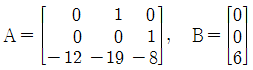
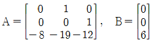
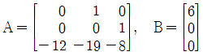
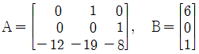
(정답률: 알수없음)
36. 온도, 유량, 압력 등의 공업스로세스 상태량을 제어량으로 하는 제어계로서 프로세스에 가해진, s 외란의 억제를 주목적으로 하는 것은?
- 프로세스 제어
- 자동조정
- 서어보기수
- 정치제어
(정답률: 알수없음)
37. 그림과 같은 신호 흐름선도에서
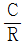
를 구하면?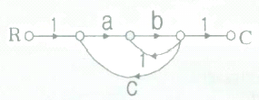
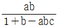
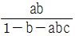
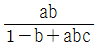
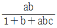
(정답률: 알수없음)
38. Y1(z)의 역변환을 y1(k), Y2(z) 의 역변환을 y2(k) 라 할때, Y(z) = Y1(z)Y2(z) 의 역변환은?
- y(k) = y1(k)y2(k)
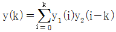
(정답률: 알수없음)
39. 에서 점근선의 교차점은?
- 2
- 5
- -4
(정답률: 알수없음)
40. 다음의 논리 회로를 간단히 하면?
- AB
(정답률: 알수없음)
3과목: 신호기기
41. 장대형 전동차단기에서 기기의 정격 전압은?
- AC25V
- DC24V
- AC 250V
- DC 100V
(정답률: 알수없음)
42. 단상 유도 전동기의 기동 방법중 기동토그가 가장 큰 것은?
- 분상 기동형
- 반발 기동형
- 반발 유도형
- 콘덴서 기동형
(정답률: 알수없음)
43. 전철구간에 설치된 다음 중 3종 접지를 하지 아니 해도 되는 것은?
- 철관장치
- 건널목 차단기
- 신호제어계전기(GR)
- 연동기 및 조작반
(정답률: 알수없음)
44. 건널목 전동차단기에는 어떤정동기가 사용되는가?
- 직류 직권전동기
- 직류분권전동기
- 단상유도 전동기
- 직류복권전동기
(정답률: 알수없음)
45. 열차의 차축에 의하여 궤도회로의 전원을 단락하였을 때 전원 장치에 과전류가 흐르는 것을 제한하고 전압을 조성하기 위해서 설치하는 것은?
- 레일본드
- 전원장치
- 잠파선
- 한류장치
(정답률: 알수없음)
46. 전기전철기의 마찰 연축기의 역할은?
- 마찰연축기와 맞물린 기어 마모 방지
- 회전수 조절
- 전동기 보호
- 습기 방지
(정답률: 알수없음)
47. 건널목 경보기에서 경보종의 타종수는 기당 매분 몇 회 인가?
- 10 ~ 50회
- 60 ~ 90회
- 70 ~ 100회
- 100 ~ 110회
(정답률: 알수없음)
48. 전기 전철기 운전중 콘덴서 회로가 단선될 경우 전동기의 동작상태는?
- 정지후 다시동작한다.
- 계속회전한다.
- 전철기 동작이 정지된다.
- 회전방향이 달라진다.
(정답률: 알수없음)
49. 직류 무극선조계전기의 접점수는?
- N4R4
- NR4
- NR6
- NR2
(정답률: 알수없음)
50. 무부하시 자여자가 되지 않는 직류기는?
- 타여자기
- 분권기
- 복권기
- 직권기
(정답률: 알수없음)
51. 퍼센트 임피던스가 4[%]인 변압기가 운전중 단락 되었을 때 단락 전류는 몇배 정도인가?
- 15배
- 25배
- 30배
- 40배
(정답률: 알수없음)
52. 전원의 주파수가 50[Hz]이고, 6극의 유도 전동기의 회전수가 960[rpm]일 때 회전자 회로의 2차 주파수[Hz]는?
- 2
- 4
- 6
- 8
(정답률: 알수없음)
53. 유도전동기를 기동하여 를 Y로 전환 했을 때 토크는 몇배가 되는가?
- 3
- √3
(정답률: 알수없음)
54. 건널목 제어자 201형 및 401형 중 틀린 것은?
- 201형 주파수는 20KHz±2KHz 이내이다
- 401형 주파수는 40KHz±2KHz 이내이다
- 온도특성을 보호하기 위하여 저항을 사용한다.
- 201형은 폐전로 식이고 401형은 개전로식이다.
(정답률: 알수없음)
55. 변압기 내부고장 보호에 쓰이는 계전기는?
- 차동 계전기
- 접지계전기
- 과전압 계전기
- 역상 계전기
(정답률: 알수없음)
56. 건널목 경보기에서 경보종 코일의 전류는 정격값을 몇 [%] 이내이어야 하는가?
- ±5
- ±10
- ±15
- ±20
(정답률: 알수없음)
57. 구동장치에서 단독축구동방식에 속하지 않는 것은?
- 조괘식
- 킐식
- 카르단식
- 잭샤프트식
(정답률: 알수없음)
58. 다음중 SDR의 설명으로 옳은 것은?
- PNPN 구조를 갖는 4층 반도체 소자
- 스위칭 기능을 갖는 쌍방향성의 3단자 소자
- 제어 기능르 갖는 쌍방향성의 3단자 소자
- 증폭기능을 갖는 단일 방향성의 3단자 소자
(정답률: 알수없음)
59. 중성점이 잇느 s같은 변압기 2대를 사용하여 T 결선으로 3상 변압을 하려고 할때 변압기의 이용률은?
- 62.5[%]
- 67.5[%]
- 76.6[%]
- 86.6[%]
(정답률: 알수없음)
60. 직류전동기의 속도 제어법에서 정출력 제어에 속하는 것은?
- 워드제로나드 제어법
- 계자 제어법
- 전기자 저항법
- 전압제어법
(정답률: 알수없음)
4과목: 신호공학
61. 서행 허용 표지를 설치하는 신호기는?
- 중계신호기
- 유도신호기
- 서행 신호기
- 폐색신호기
(정답률: 알수없음)
62. 열차가 교행을 하는 장소 등에서 열차의 과주로 인해 충돌, 접촉을 방지하기위해 설치하는 선로는?
- 부본선
- 안전측선
- 핀난선
- 인상선
(정답률: 알수없음)
63. 2개의 지상자를 이용하여 속도 조사를 하고자 한다. y 신호를 현시하고 있는 지점에 조사속도 50Km/h이고 응동 법위 320mm, 주행시간이 0.5sec라면 2개의 지상자 간의 거리는 몇 m 인가?
- 6.26
- 7.26
- 8.26
- 9.26
(정답률: 알수없음)
64. 어느선구에서 운행되는 여객 열차의 최고 속도가 130Km/h일 때 ATS-S (점제어식)형 지상자의 설치 위치는?
- 20m
- 1,130m
- 1,361m
- 1,372m
(정답률: 알수없음)
65. 궤도 회고 구성에 있어서 건널 목의 401형 제어기는 다음 중 어느 방식으로 구성하는가?
- 폐전로식
- 개전로식
- 직렬식
- 병렬식
(정답률: 알수없음)
66. 전자식 원격 제어장치 (ERC)의 논리 부에서 불량 검지회로를 내장하고 시스템의 동작 상태를 LED로 표시해주는 것은 어느 것 인가?
- L1
- L2
- CPL
- TGn
(정답률: 알수없음)
67. CTC 장치에 대한 설명이다. 옳지 않은 것은?
- 피제어역의 연동장치는 전자(전기) 연동장치이어야 한다.
- CTC구간의 예색장치는 자동 폐색 장치이어야 한다.
- 단선구간의 대향으로 되는 출발신호기의 상호간의 연쇄는 운전방향 신호 버튼을 설비하여 시행한다.
- CTC장치에 사용하는 컴퓨터 장치는 Hot Syand-by 로 한다.
(정답률: 알수없음)
68. 단선구간의 어느 역간에서 상행 운전 시분이 6분, 하생운전시분이 4분, 퍠색취급 시분이 2분이고 선로의 이용 률이 70%일 때 선로 용량은 몇 회 인가?
- 74
- 84
- 94
- 104
(정답률: 알수없음)
69. 직류전화 구간에서 발생하는 전식을 반도체를 직접 레일과 매설 관측에 접속하여 방식(防飾)하는 방법은?
- 희생 양극식
- 선택배류방식
- 강제배류방식
- 정전류배류방식
(정답률: 알수없음)
70. 계전연동 장치의 전철 제어회로에 다음과 같은 계전기의 접점들이 삽입되어 있다. 옳은 것은?
- NR, RR, TPR, TLSR, TRSR, WLR
- NR, RR, WLR, TLSR, TRSR, HR
- NR, RR, TPR, TLSR, TRSR, ZR
- NR, RR, WR, TPR, HR, CR
(정답률: 알수없음)
71. 궤도 회로를 구성할 때는 레일 간을 절연하는데 레일 간을 절연 하는 방법중 양쪽 에일을 모두 절연하는 방식은?
- 단궤조식
- 개전로식
- 복궤조식
- 폐전로식
(정답률: 알수없음)
72. 신호용 전원 및 접지관련 내용 이다. 설계 및 설치시에 대한 설명으로 틀린 것은?
- 컴퓨터 시스템의 접지는 전원접지와 분리하고 접지를 공동으로할 경우에는 접지선 부근에서 접지한다.
- 각종 데이터 통신 케이블 및 공기 조화기 등의 배선과 평행하지 않도록 하고 교찻기 직각 교차를 하도록 한다.
- 배선은 길이에 의한 전압강하 및 부하의급격한 변동에 따른 순간적인 전압 변동에 따른 지장이 없도록 충분한 단면적을 확보한다.
- 접지는 접지봉과 동판을 사용하며 효율이 좋은 3종 접지로 50으로 한다.
(정답률: 알수없음)
73. 조건부 쇄정의 설명중 9호 리버가 반위 일 때에만 11호 리버가 정위로 쇄정 되는 경우의 표시는?
- [11, 단⑨]
- (11, 단⑨)
- {11, 단⑨}
- ((11, 단⑨))
(정답률: 알수없음)
74. 궤도계전기의 동작 전압이 0.9V이고, 낙하 전압이 0.3V 인 궤도 회로의 어느 한지점에서 단락 감도를 시험 하엿더니 0.1Ω 이었다. 단락 지점에서 본 궤도회로의 임피던스는 몇 Ω 인가?
- 0.2
- 0.5
- 2
- 5
(정답률: 알수없음)
75. 모양과 색에의한 철도 신호는?
- 발뢰 신호
- 선로전환기 표지
- 열차표지
- 진로표시기
(정답률: 알수없음)
76. 다음의 도식 기호 중 차막이 표지의 기호는 어느 것인가?
(정답률: 알수없음)
77. 근거리 동신망(LAN)을 구성할 때 토폴로지에 대한 설명으로 틀린 것은?
- 버스형 - CSMA/CD 엑세스 방식이다.
- 링프형 - 루프내의 장치 고장으로 시스템이 다운된다.
- 루프형 - 루프제어장치의 고장으로 시스템이 다운된다.
- 스타형 - 중앙장치가 고장나더라도 시스템은 정상 동작한다.
(정답률: 알수없음)
78. 경부고속절도 신선 구간에 설치된 UM71-TVM430 궤도 회로용 구성기기가 아닌 것은?
- 동조유니트(BU)
- 공심유도자(SVAC)
- 임피던스본드
- 전자패달(D50)
(정답률: 알수없음)
79. 교유전철구간에 사용 되지 않는 궤도 회로는?
- 임펄스 궤도 회로
- 직류바이어스 궤도회로
- PF궤도 회로
- 직류궤도회로
(정답률: 알수없음)
80. ATS 동작의 주체가 되는 시설 또는 설비는 어느 것인가?
- 궤도회로 장치
- 입환표지
- 장내, 폐색 신호기
- 전자연동장치
(정답률: 알수없음)
E = hc/λ
여기서 h는 플랑크 상수, c는 빛의 속도, λ는 파장입니다. 따라서,
E = hc/4500Å
= (6.626 x 10^-34 J s) x (3 x 10^8 m/s) / (4500 x 10^-10 m)
= 4.41 x 10^-19 J
이 값을 전자볼트(eV)로 변환하면,
E = 4.41 x 10^-19 J / 1.602 x 10^-19 J/eV
= 2.76 eV
따라서, 이 광전음극의 일함수는 약 2.76 eV입니다.